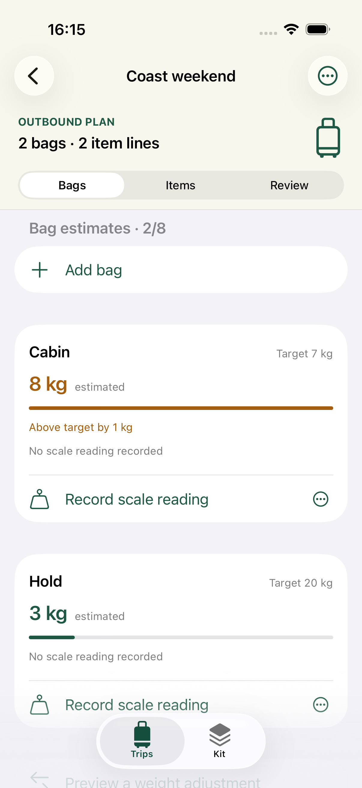
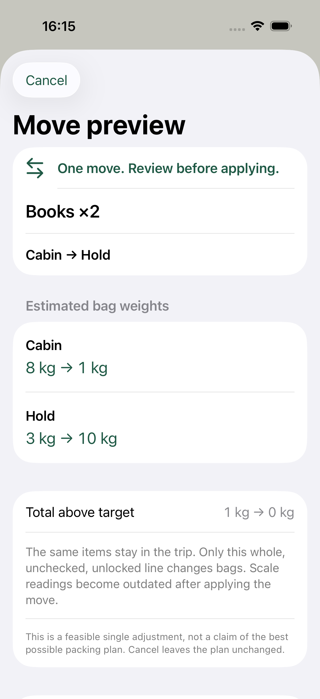
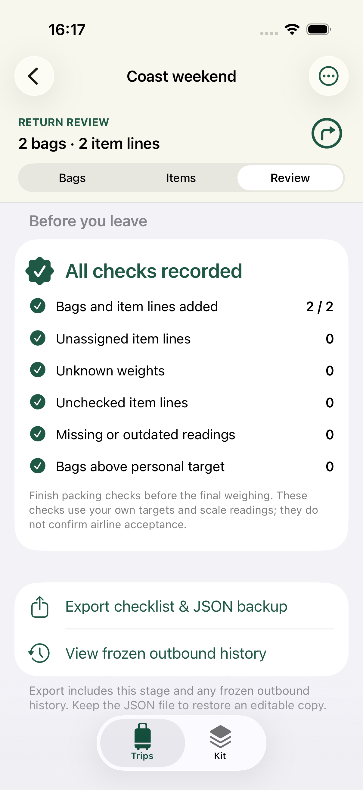

OFFLINE PACKING / iPHONE + iPAD
Know what goes. Record what weighs.
A packing list with a record of the decisions behind it. Arrange items across bags, compare list estimates with your scale readings, and start the return journey with a separate check.
Preparing for release
01 / The process
How to prepare a trip in BagLedger
Start with an empty trip or copy items from your own kit. Work from the list to the final weighing, then keep the return check separate.
Create the trip and bags
Name a trip, add your bags, and set a personal weight target for each. Enter empty-bag weights when known. These targets are your own planning limits, not airline rules.
Build and assign the list
Add each item line with a quantity and an optional weight per item, then assign it to a bag. A missing item or empty-bag weight remains unknown. Items copied from your kit become independent trip entries.
Review one possible move
Once all weights are known and every item is assigned, request a single-move preview. It can move one whole, unlocked, unchecked item line from a bag above its target to another bag without putting that bag above its target. Review the before-and-after estimates, then apply or cancel.
Pack first, then record the scale
Check each line only when its full quantity is packed or reviewed. Weigh the bag on your own scale and enter the reading manually. Later plan changes mark earlier readings out of date, so record the final weighing after packing checks.
Keep the history and take a copy
Confirm the start of return review to freeze the complete outbound record. The return plan starts with checks cleared and no weighings. Export a readable text checklist or a JSON trip backup; import a valid JSON file through a preview to add a new trip without replacing an existing one.
02 / Weight records
A number should tell you where it came from.
The list estimate includes empty-bag weight plus quantity × weight per item. A scale reading is a separate number you enter yourself.
ILLUSTRATIVE CALCULATION — NOT AN APP SCREENSHOT
A complete list can be added up.
- Empty bag
- 1.0 kg
- 2 items × 1.5 kg
- 3.0 kg
- List estimate
- 4.0 kg
This example explains the arithmetic only. If either the empty-bag weight or an item weight is missing, BagLedger shows a known subtotal and unknown count instead of treating the missing value as zero.
Unknown stays unknown
A bag with missing weights does not receive a complete estimate. An unassigned line remains visible as unfinished work. Complete weights and assignments before asking for a move.
A change means a fresh check
Changing the plan, packing checks, or locks makes older scale readings out of date. The earlier reading remains in the record; it is not treated as a current check. Undoing a move does not make an old reading current again.
BagLedger does not weigh luggage, check airline policies, or confirm permission to carry an item. Use your own scale and verify the carrier’s current rules separately.
In the app
One trip, three moments.
Follow a trip from an above-target estimate to a move preview and a separate return check.

See what needs a second look.
Cabin is estimated at 8 kg against a personal 7 kg target. A scale reading has not been recorded.

Review before moving.
The Books ×2 line moves from Cabin to Hold in the preview. The estimates change from 8 to 1 kg and 3 to 10 kg; total above target falls from 1 kg to 0 kg.

A fresh check for the way back.
The return review shows all checks recorded, with export and frozen outbound history available from the same screen.
03 / Questions
Before you pack.
The useful details about weights, moves, records, and sharing.
Does BagLedger weigh a bag or check airline limits?
No. You enter estimated item and empty-bag weights, set your own targets, and manually record readings from your own scale. BagLedger does not measure weight, provide airline policy checks, or guarantee acceptance by a carrier.
What happens when a weight is unknown?
Unknown item or empty-bag weights stay unknown. The bag shows the known subtotal and missing-weight information instead of a complete estimate. Missing weights are not treated as zero or as confirmation that the bag meets its target.
Is the suggested move the best packing plan?
No. It is one feasible adjustment based on complete list estimates and assigned items. It moves only a whole item line that is unlocked and unchecked in the current stage, reduces the total weight above your targets, and keeps the destination bag within its target. If none is found, that does not prove that no better arrangement exists.
Can I cancel or undo a move?
Canceling the preview leaves the plan unchanged. You can undo only the most recently applied move while its undo is still valid. Another edit, a stage change, or restarting the app clears that undo. Editing after a preview also requires a new preview.
Why is a scale reading marked out of date?
A reading belongs to the plan as it was when recorded. A later change to the plan, packing checks, or locks marks it out of date. Its value and time remain visible, but it no longer counts as a current check. Finish packing checks and then weigh again.
Does the return check change my outbound history?
No. After you confirm the start of return review, BagLedger keeps a read-only snapshot of the complete outbound plan. The separate return plan begins with packing checks cleared and no scale readings. Later return edits do not change that snapshot.
Do I need an account, and what does sharing include?
No account is required. Trip records, your kit, and file import and export are handled on your device, with no ads or remote analytics in the app. Sharing a text checklist or JSON backup sends trip and item data to the destination you select. There is no cloud sync or live collaboration.
What can I keep, export, and restore?
You can keep up to 20 trips, with 8 bags and 200 item lines per stage. Separately, your kit can hold up to 200 items. Each line has a quantity of 1 to 100; checking it confirms the whole quantity. Text export is for reading or handoff. A valid BagLedger JSON backup, up to 2 MiB, can be previewed and imported as a new trip, including outbound history when present.
04 / Support
A clear record helps us help you.
For a question or a problem, email the app version, device model, and the steps that led to it. If saving fails, keep the original local file and the error message; avoid deleting the app before keeping an external copy of your exported records.
shuitian13@gmail.comEmail is voluntary. Only attach trip files if you want to share their contents with support. Do not include information you prefer to keep private.
iOS 17+ · iPhone / iPad · g / kg / lb